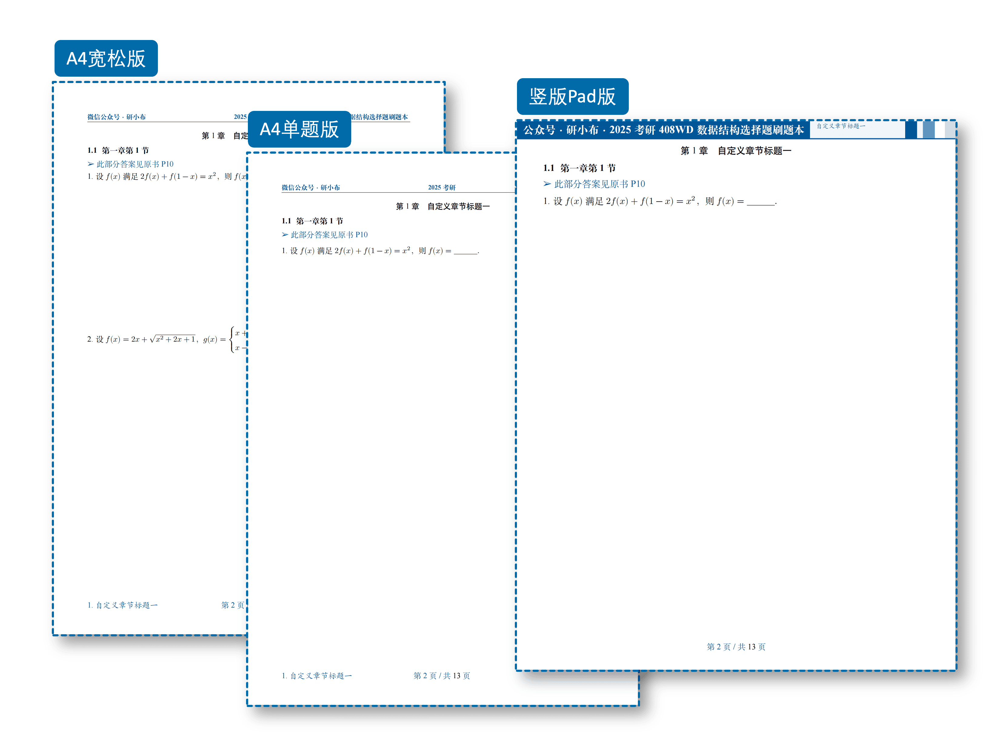

ExBookie — 考试做题本
一次录入题目，就能自动生成 6 种不同版式的刷题本 PDF，无需手动调整任何格式。适合考试习题册、课后练习册等场景。

功能特点
- 6 种版式一键切换：A4 紧凑版、A4 标准版、A4 宽松版、A4 单题版、横版 Pad 版、竖版 Pad 版。同一份题目源文件，通过文档类选项即可切换布局
- 选择题自动排版：根据选项文字长度自动排列为 1 列、2 列或 4 列，无需手动调整
- 12 种颜色主题：4 种经典色（蓝/绿/紫/橙）+ 8 种 MBTI 个性色，
\setThemeColor{\blue}一键切换，封面、页眉、题注全部跟随 - TikZ 精美封面：全幅背景图 + 装饰横条 + 可自定义标题/副标题/作者/座右铭
- 完整习题系统：题组环境（
qitems）、题目框（bbox）、解析环境（analysis）、解答环境（solution）、小问列表（subqitems） - 代码高亮：
lstlisting环境，深色/亮色双模式 - 水印系统：支持行内文字水印和页面图片水印
- 深色模式：
darkmode选项，Pad 版下全局暗色主题 - 外部配置：
config.tex一站式配置封面、页眉、颜色、水印，无需修改类文件 - 截图型刷题本：
\insertimg命令批量导入题目截图
如何使用
- 配置本地 LaTeX 环境（或直接使用 Overleaf）
- 将项目拷贝到本地（或 Overleaf）
注意：使用此项目需要一点 LaTeX 基础。
本地编译推荐使用 latexmk：
也可直接使用 xelatex：
文档类选项
字体选项（建议使用 fandol）
adobe：使用 adobe 字体ubuntu：使用 ubuntu 字体windows：使用 windows 字体fandol：使用 fandol 字体，随 TeXLive 默认安装mac：使用 mac 字体
版式选项
standard：A4 标准版。题目间约 3cm 空隙，每题内容不跨页loose：A4 宽松版。每页约 2 题compact：A4 紧凑版。题目间无空隙single：A4 单题版。每页仅一题padl：横版 Pad 版。200×150mm，适合选择题padp：竖版 Pad 版。200×250mm，适合解答题
其他选项
printmode：双面打印模式water：全局页面水印online：封面显示在线勘误链接darkmode：深色模式（Pad 版下生效）notocnum：不显示章节编号showmark：显示页脚章节标记analysis：全文显示题目解析
封面设置
打开 config.tex：
\CoverImg{img/cover.jpg}
\PreTitle{ExBook · 刷题本模板}
\Title{此处填写主标题}
\TitleDescription{此处填写副标题}
\TypeOne{A4紧凑版}
\TypeTwo{A4标准版}
\TypeThree{横版Pad版}
\TypeFour{A4宽松版}
\TypeFive{A4单题版}
\TypeSix{竖版Pad版}
\motto{座右铭}
\Creator{研小布}
\UpdateTime{\today}
\OnlineCheckUrl{https://github.com/ExBook/ExBookie}
页眉页脚
主题颜色
12 种颜色可选（4 种经典 + 8 种 MBTI）：
\setThemeColor{\blue} % 经典：\blue \green \purple \orange
\setThemeColor{\infj} % MBTI：\infj \enfp \infp \esfp \intj \entp \isfj \enfj
水印
题目录入
题组环境
可选参数：unreset（不重置题号）、unshow（隐藏题号）、showanalysis（显示解析）、prefix/suffix（题号前后缀）、optprefix/optsuffix（选项标签前后缀）、startnum（起始题号）
题目环境
\begin{bbox}
\qitem 题目内容
\fourchoices{选项A}{选项B}{选项C}{选项D}
\begin{analysis}
解析内容
\end{analysis}
\end{bbox}
选择题选项
\threechoices{A}{B}{C} % 三个选项
\fourchoices{A}{B}{C}{D} % 四个选项
\fivechoices{A}{B}{C}{D}{E} % 五个选项
\sixchoices{A}{B}{C}{D}{E}{F} % 六个选项
选项会根据文字长度自动排列为 1 列、2 列或 4 列。
小问
代码高亮
其他命令
| 命令 | 说明 |
|---|---|
\blankbox / \eblankbox |
中文/英文空括号 |
\blankline |
空白下划线 |
\textwater |
渲染水印文字（内容在 config.tex 配置） |
\imgin[缩放]{对齐}{路径} |
插入图片 |
\qanswerloc{页码} |
答案位置指示 |
\autotilte[对齐]{标题}{副标题} |
自由标题 |
完整示例
\documentclass[standard, analysis]{ExBook}
\begin{document}
\include{config}
\maketitle
\include{contents/pre}
\include{contents/print}
\setcounter{page}{1}
\tableofcontents
\clearpage
\section{第一章}
\subsection{第一节}\qanswerloc{10}
\begin{qitems}[showanalysis]
\begin{bbox}
\qitem 设$f(x)$满足$2f(x)+f(1-x)=x^2$，则$f(x)=\blankline.$
\begin{analysis}
$f(x)=x^2$
\end{analysis}
\end{bbox}
\end{qitems}
\end{document}